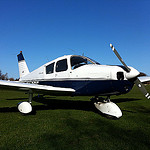
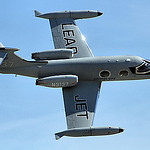
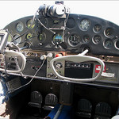

An airplane or aeroplane (informally plane) is a powered, fixed-wing aircraft that is propelled forward by thrust from a jet engine or propeller. Airplanes come in a variety of sizes, shapes, and wing configurations. The broad spectrum of uses for airplanes includes recreation, transportation of goods and people, military, and research. Most airplanes are flown by a pilot on board the aircraft, but some are designed to be remotely or computer-controlled.
Types of Propulsion
Propeller engines: Smaller and older propeller planes make use of reciprocating engines (or piston engines) to turn a propeller to create thrust. The amount of thrust a propeller creates is determined by its disk area - the area in which the blades rotate.
Jet engines: Jet aircraft are propelled by jet engines, which are used because the aerodynamic limitations of propellers do not apply to jet propulsion. These engines are much more powerful than a reciprocating engine for a given size or weight and are comparatively quiet and work well at higher altitude. Jet aircraft possess high cruising speeds (700 to 900 km/h (430 to 560 mph)) and high speeds for takeoff and landing (150 to 250 km/h (93 to 155 mph)). Due to the speed needed for takeoff and landing, jet aircraft use flaps and leading edge devices to control of lift and speed. Many also use thrust reversers to slow down the aircraft upon landing.
Electric engines: An electric aircraft runs on electric motors rather than internal combustion engines, with electricity coming from fuel cells, solar cells, ultracapacitors, power beaming, or batteries. Currently, flying electric aircraft are mostly experimental prototypes, including manned and unmanned aerial vehicles, but there are some production models on the market already.
Rocket engines: In World War II, the Germans deployed the Me 163 Komet rocket-powered aircraft. The first plane to break the sound barrier in level flight was a rocket plane – the Bell X-1. The later North American X-15 broke many speed and altitude records and laid much of the groundwork for later aircraft and spacecraft design. Rocket aircraft are not in common usage today, although rocket-assisted take offs are used for some military aircraft. Recent rocket aircraft include the SpaceShipOne and the XCOR EZ-Rocket.
Ramjet and scramjet engines: A ramjet is a form of jet engine that contains no major moving parts and can be particularly useful in applications requiring a small and simple engine for high-speed use, such as with missiles. Ramjets require forward motion before they can generate thrust and so are often used in conjunction with other forms of propulsion, or with an external means of achieving sufficient speed. The Lockheed D-21 was a Mach 3+ ramjet-powered reconnaissance drone that was launched from a parent aircraft. A ramjet uses the vehicle's forward motion to force air through the engine without resorting to turbines or vanes. Fuel is added and ignited, which heats and expands the air to provide thrust.
A scramjet is a supersonic ramjet and aside from differences with dealing with internal supersonic airflow works like a conventional ramjet. This type of engine requires a very high initial speed in order to work. The NASA X-43, an experimental unmanned scramjet, set a world speed record in 2004 for a jet-powered aircraft with a speed of Mach 9.7, nearly 7,500 miles per hour (12,100 km/h).
Characteristics
Airframe
The structural parts of a fixed-wing aircraft are called the airframe. The parts present can vary according to the aircraft's type and purpose. Early types were usually made of wood with fabric wing surfaces, When engines became available for powered flight around a hundred years ago, their mounts were made of metal. Then as speeds increased more and more parts became metal until by the end of WWII all-metal aircraft were common. In modern times, increasing use of composite materials has been made.
Typical structural parts include:
One or more large horizontal wings, often with an airfoil cross-section shape. The wing deflects air downward as the aircraft moves forward, generating lifting force to support it in flight. The wing also provides stability in roll to stop the aircraft from rolling to the left or right in steady flight.
A fuselage, a long, thin body, usually with tapered or rounded ends to make its shape aerodynamically smooth. The fuselage joins the other parts of the airframe and usually contains important things such as the pilot, payload and flight systems.
A vertical stabilizer or fin is a vertical wing-like surface mounted at the rear of the plane and typically protruding above it. The fin stabilizes the plane's yaw (turn left or right) and mounts the rudder which controls its rotation along that axis.
A horizontal stabilizer or tailplane, usually mounted at the tail near the vertical stabilizer. The horizontal stabilizer is used to stabilize the plane's pitch (tilt up or down) and mounts the elevators which provide pitch control.
Landing gear; a set of wheels, skids, or floats that support the plane while it is on the surface. On seaplanes the bottom of the fuselage or floats (pontoons) support it while on the water. On some planes the landing gear retracts during flight to reduce drag.
Empennage and Foreplane
The classic airfoil section wing is unstable in flight and difficult to control. Flexible-wing types often rely on an anchor line or the weight of a pilot hanging beneath to maintain the correct attitude. Some free-flying types use an adapted airfoil that is stable, or other ingenious mechanisms including, most recently, electronic artificial stability.
But in order to achieve trim, stability and control, most fixed-wing types have an empennage comprising a fin and rudder which act horizontally and a tailplane and elevator which act vertically. This is so common that it is known as the conventional layout. Sometimes there may be two or more fins, spaced out along the tailplane.
Some types have a horizontal canard foreplane ahead of the main wing, instead of behind it. This foreplane may contribute to the lift, the trim, or control of the aircraft, or to several of these.
Controls and Instruments
Airplanes have complex flight control systems. The main controls allow the pilot to direct the aircraft in the air by controlling the attitude (roll, pitch and yaw) and engine thrust.
On manned aircraft, cockpit instruments provide information to the pilots, including flight data, engine output, navigation, communications and other aircraft systems that may be installed.
Safety
When risk is measured by deaths per passenger kilometer, air travel is approximately 10 times safer than travel by bus or rail. However, when using the deaths per journey statistic, air travel is significantly more dangerous than car, rail, or bus travel. Air travel insurance is relatively expensive for this reason- insurers generally use the deaths per journey statistic. There is a significant difference between the safety of airliners and that of smaller private planes, with the per-mile statistic indicating that airliners are 8.3 times safer than smaller planes.
Gallery

Above is an example of a propeller engine airplane Source
A jet engine airplane mid-flight Source
Controls for a Cessna 180 Source